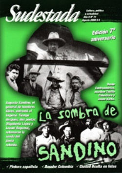

Buscar
La sombra de Sandino
Fragmentos de una historia desgarrada en tres pedazos. La de un jinete rebelde que osó enfrentarse a un Imperio. La de un violinista especializado en serenatas que elige vengar a Sandino. La de un poeta seminarista que encontró en las voces de la calle su propia voz. La de un país castigado por la opresión, que tuvo los hombres y mujeres decididos a cambiar su suerte.
Edición N° 71
Agosto 2008
Revista bimensual
Comprar edición impresaSumario
- La sombra de Sandino
- Siete años no son nada
- Pintura y zapatismo
- Entrevista con Mauro Millán
- Mario Levrero, soñador
- Fenómeno contracultural
Compartir Articulo
En la débil montaña sembraron / su agreste ideal / y su grito vive lactando en el viento...
Versos finales de una versión inédita del poema de Leonel Rugama, "Biografía"
1.¿Qué sueños desvelan al general Sandino? ¿Qué juego de sombras invade su memoria adormecida? ¿Sueña, el general Sandino, con el final de la noche, con el alba asomando en el campamento, con la suerte de sus hombres en las próximas horas? El sueño es el refugio del guerrero. Allí, los miedos se presentan y se hacen carne. Allí también, la duda se impone y define sus actos. Después, cuando amanezca, no habrá lugar para miedos ni para dudas. Habrá ojos mirando cada gesto y oídos escuchando cada silencio, y cualquier vacilación se multiplicará por cien entre sus soldados. El general lo sabe, y por eso sólo en sus sueños es libre.
Repasando los escritos y documentos de Sandino, es inevitable detenerse en la recurrente presencia nocturna durante sus años de batalla. Dice, en una manifiesto de julio de 1931: "Mi conciencia está tranquila y gozo con satisfacción del deber cumplido. Aun en el sueño soy feliz, pues duermo con la dulzura de un niño sano". Algunos años antes, firma de puño y letra un documento titulado "Plan de realización del supremo sueño de Bolívar".
Confiesa, en una entrevista de febrero de 1933: "Una vez soñaba que se acercaban las tropas enemigas y que venían con ellos un tal Pompilio, que había estado antes conmigo. Me levanté inmediatamente y di la voz de alarma, poniendo a todos en plan de defensa. Dos horas después, todavía sin amanecer, los americanos estaban allí, iniciando el combate".
Si uno recorre con atención los manifiestos del general, es posible establecer que cada documento, cada carta, cada proclama, parece viajar en equilibrio entre dos instancias: la realidad que exige compromiso, sacrificio y valentía; y la perspectiva a futuro que se envuelve con un velo de ensoñación, de deseo, de final de camino. En esa delgada frontera que divide el sueño de la vigilia, navega Sandino a lo largo de sus seis años de lucha. Cada tanto, elige inclinarse hacia uno de los dos extremos en busca del equilibrio necesario. Cuando la realidad lo agobia, hurga en sus ideales para reafirmar cada idea, cada paso a seguir. Cuando el futuro se vuelve difuso y el proyecto de país soberano e independiente parece desvanecerse, pues entonces emerge el presente como ejemplo, la pelea cotidiana como única garantía.
Lo cierto es que esa noche los sueños perturban al general. La madrugada se dilata y el final de la noche termina con una revelación. Sandino despierta a una realidad que exige una decisión inmediata: en la mañana del 1° de febrero de 1933, el hombre que durante seis años humilló al imperio más poderoso del globo, aquel muchacho tímido, abstemio y petiso que había trabajado como peón, como tornero mecánico, como artesano, como obrero agrícola y que un años antes de sumarse a las filas del ejército nacional contra el invasor atendía una expendedora de nafta en México, había decidido abandonar Las Segovias. Dejar su refugio impenetrable y viajar a Managua, a negociar la paz con el gobierno constituido, que aseguraba pretender terminar con la intervención norteamericana en el país.
Nadie pudo convencerlo de la temeridad de su idea. Hubo lágrimas en los rostros curtidos de sus hombres; hubo advertencias que preanunciaban el final. Pero nadie pudo. Esa noche interminable, Sandino había tomado una decisión.
(La nota completa en la edición gráfica)
Comentarios
Hugo Montero, Ignacio Portela
Articulos más vistos


LIBRERÍA SUDESTADA

Colección infantil

Distribuidora de Libros

Suscripción

Sudestada en URUGUAY

Otros articulos de esta edición
Pintura y zapatismo
Alumno de Diego Rivera, Antonio Ramírez se dedicó al arte comprometido en un México convulsionado por los levantamientos indígenas. El ...
 Feria del libro independiente (FLIA)
Feria del libro independiente (FLIA)
Fenómeno contracultural
Una Feria del libro en la que encontramos todo lo que puede ofrecer el arte como expresión alternativa. Stands improvisados ...
 Crónica viajera
Crónica viajera
Entrevista con Mauro Millán
En la localidad de Esquel, provincia de Chubut, dialogamos con Mauro Millán. A lo largo de un intenso y prolongado ...
 Entrevista
Entrevista
Mario Levrero, soñador
Nació en Montevideo en 1940. Le hubiera gustado hacer cine, se conformó uruguayamente con escribir cuentos, novelas y guiones de ...
 Editorial
Editorial